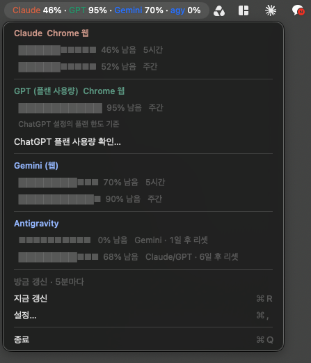
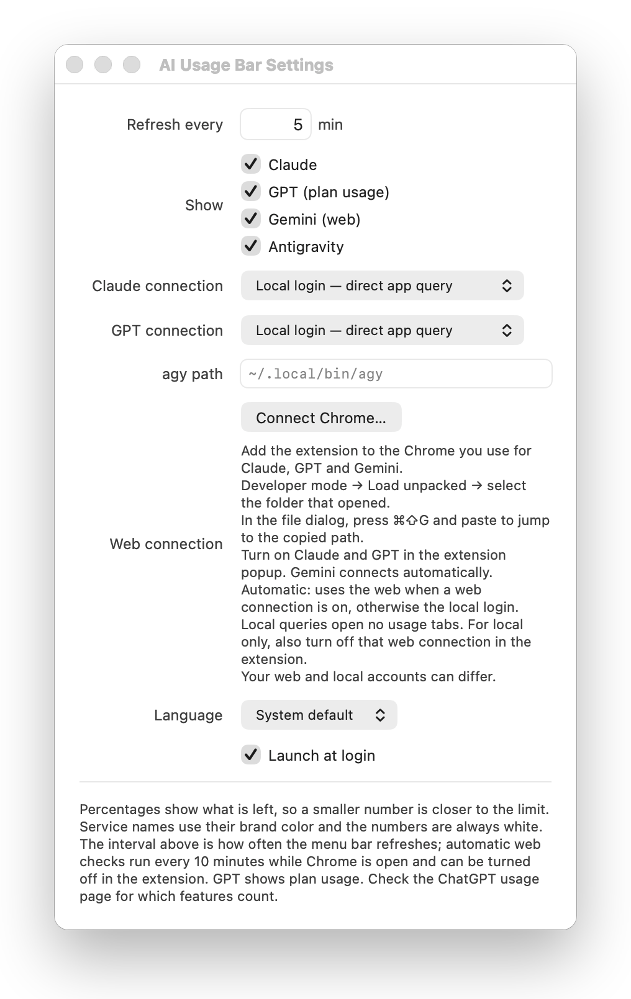

macOS menu bar app · free & open source
Your AI limits,
in one line.
See how much of your Claude, ChatGPT, Gemini and Antigravity allowance is left, side by side. Connect with the web logins you already have in Chrome. No terminal needed.
↑ That one line in the bar above is the whole app.
brew install --cask hong-minji/tap/ai-usage-bar01 — Why
Stop going to look
Instead of opening a settings page in each service to see what is left, glance at the menu bar.
One line, counting what's left
Every number is what remains, not what you used, so smaller means closer to the limit. When a service has both a five-hour and a weekly window, the bar shows the tighter one.
Web logins, no terminal
Being signed in to Claude, ChatGPT and Gemini in Chrome is enough. There is no CLI to install and no API key to create.
Gemini web quota too
It shows the gemini.google.com allowance, and the Antigravity (agy) coding quota separately.
A connection that leaves cookies alone
The bundled Chrome extension reads only the figures shown on each usage page and passes them to this Mac. It does not read cookies, passwords or conversations.
Checks usage without calling a model
No prompts are sent. The app itself measured about 30–35 MB of memory on the test Mac (v1.3.0).
Never invents a 0%
If a check fails you see the last good reading, how old it is, and the error. There is no developer server, analytics, advertising or telemetry.
02 — The real thing
Actual screens, not mockups


03 — Connect
Use the logins you already have
Two ways to connect, for people who only use the web and for people with terminal tools. You can choose differently for each service.
Connect through Chrome
No terminal needed. Works for Claude, GPT and Gemini.
- In the app, open Settings… → Web connection → Connect Chrome…
- Turn on Developer mode at
chrome://extensions/. - Load unpacked → ⌘⇧G → paste → select the folder.
- Turn on Claude and GPT in the extension popup. Gemini connects automatically.
Use existing local logins
The lightest option if you are already signed in to Claude Code, Codex or agy.
- In Settings, set the connection to Local login — direct app query.
- For Claude, allow Keychain access when macOS asks. The token is only read.
- For agy, install and sign in to the CLI, then turn it on under Show.
- No terminal window to keep open, and no Chrome tabs are opened.
Step-by-step details and caveats are in the README.
04 — Compare
How it differs from other tools
Several tools already show AI usage. To make the choice easier, here it is next to two well-known tools of a different character. Details about other projects come from their READMEs, checked November 16, 2026.
| AI Usage Bar | CodexBar | ccusage | |
|---|---|---|---|
| Form | Mac menu bar app | Mac menu bar app (Linux too) | Terminal CLI |
| Shows | Remaining subscription quota for four services | Limits, credits and spend for 100+ services | Token usage and cost of coding-agent CLIs |
| Best for | People who use AI on the web, or want just the limits | Developers running many coding agents | Claude Code, Codex and other CLI users |
| Web login connection | Chrome extension reads only the figures on usage pages | Browser cookie import (opt-in) | Not applicable |
| Gemini | gemini.google.com web quota | Quota via Gemini CLI login | Not applicable |
| macOS | 13 or later | 14 or later | Not applicable |
- Want many coding agents and API credits in one place? CodexBar is the better fit.
- Want to analyze token usage and cost by day or session? Use ccusage.
- Don't use a terminal, or just want the remaining quota of your Claude, ChatGPT and Gemini subscriptions? Try AI Usage Bar.
05 — Install
Download, move, done
- Download the ZIP from Releases. One file covers Apple Silicon and Intel.
- Move the app to Applications, then open it. It appears in the menu bar, with no Dock icon.
- Open Settings… and turn on the services you use. Connect them with option A or B above.
brew install --cask hong-minji/tap/ai-usage-barmacOS may block the first launch. This early release has no Apple Developer ID signing or notarization yet. Try opening it once, then allow it under System Settings → Privacy & Security → Open Anyway.
Windows and Linux are not supported.
06 — Questions
Things you might ask
Is the percentage what I used or what is left?
What is left. A smaller number is closer to the limit. When a service has both a five-hour and a weekly limit, the menu bar shows whichever has less left, and the open menu shows each one.
Does checking usage consume tokens or quota?
The app sends usage queries only and never sends a prompt to a model. A measured Antigravity /quota response reported zero tokens and zero turns.
Do I need terminal tools such as Claude Code or Codex?
No. If you are signed in to Claude, ChatGPT and Gemini in Chrome, the extension bundled with the app connects them. If you already use the terminal tools, you can keep using those logins instead.
Does the extension read cookies or conversations?
No. It reads only the figures shown on each usage page and passes them to the app on this Mac. It does not extract cookies, passwords or authentication tokens, and does not transmit conversation text.
What does the GPT number mean?
The plan allowance shown under ChatGPT Settings → Usage. The app does not estimate chat counts or separate model limits. Check the ChatGPT usage page and the README for which features count.
macOS blocks the app from opening.
The app has no Apple Developer ID signing or notarization yet. Try opening it once, then allow it under System Settings → Privacy & Security → Open Anyway. A managed work Mac may restrict this.
Does it run on Windows or Linux?
No. It runs on macOS 13 or later only.